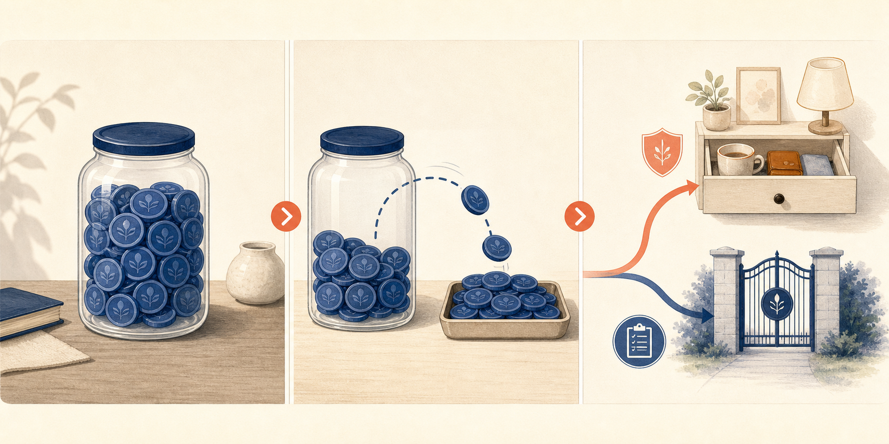

SH000905
卖出中证500
PE / 10年分位34.74 / 87%
PB / 10年分位2.43 / 81%
当前 PE 位于近10年历史的 87.1% 分位，命中“卖出”区间。
来源：雪球基金（近10年历史样本，项目本地重算分位）
2026年8月25日为星期二。上交所、深交所2026年休市安排未将今天列为休市日；四个指数均使用最近已完成交易日2026年8月24日的数据。
定投和分红再投入都不应脱离现金用途与既定估值规则；到账现金只是资产形态发生变化，不是自动加仓的理由。
先记录四个机械信号，再把可能收到的基金分红按近期支出、备用金和长期资金分类；只有长期资金且既定估值规则允许时，才考虑再投入。
不要把分红当成净值之外凭空增加的收益，也不要因为现金到账临时追涨；中证500的卖出信号只报告机械结果，不解释为全仓清算，不借钱追加风险。
事实：四个指数的数据日期均为2026年8月24日，中证500的PE分位高于80%，沪深300、纳斯达克100和标普500处于40%至80%的持有区间。国家统计局披露8月中旬50种重要生产资料中33种价格上涨；美联储H.15显示8月21日美国10年期国债名义收益率为4.74%，较前一日上升0.05个百分点。推断：投入成本扩散和长端利率上行分别可能压缩企业利润与估值，但都不能替代PE分位规则。
PE 决定行为，PB 辅助理解温度
当前 PE 位于近10年历史的 87.1% 分位，命中“卖出”区间。
来源：雪球基金（近10年历史样本，项目本地重算分位）
当前 PE 位于近10年历史的 75.2% 分位，命中“持有”区间。
来源：雪球基金（近10年历史样本，项目本地重算分位）
当前 PE 位于近10年历史的 47.2% 分位，命中“持有”区间。
来源：雪球基金（近10年历史样本，项目本地重算分位）
当前 PE 位于近10年历史的 60.4% 分位，命中“持有”区间。
来源：雪球基金（近10年历史样本，项目本地重算分位）
只保留会影响长期决策的重要变量
事实：国家统计局监测显示，2026年8月中旬与上旬相比，9大类50种重要生产资料中33种价格上涨、14种下降、3种持平；其中多晶硅、顺丁胶和焦煤涨幅较明显。推断：涨价范围扩大可能抬升部分企业采购成本，也可能带来上游库存收益；能否转嫁成本仍取决于需求和行业竞争，不能据此判断全部A股利润方向。
查看一手来源事实：美联储8月24日发布的H.15显示，8月21日美国10年期国债名义收益率为4.74%，高于8月20日的4.69%；10年期通胀保值国债收益率由2.35%升至2.40%，有效联邦基金利率保持3.63%。推断：长端名义与实际利率同步上行会提高长期现金流的折现压力，尤其影响高久期资产；单日变动不能证明利率趋势，也不能预测美股短期涨跌。
查看一手来源每天随机读透一个完整观点，而不是收藏更多标题
《指数基金投资指南》 · 第5章《如何买卖指数基金：懒人定投法》，PDF 202—261页
核心主张：定投的价值在于把长期闲钱按规则投入，而不是机械地忽略估值。分红到账后也应先判断现金用途和当前投资价值，再决定留作现金、转向其他低估资产或再投入。
“我们可以把分红视为一次现金收入。”
今天连接：今天中证500处于卖出区间，另外三个指数处于持有区间。即使有分红到账，机械信号也不会因此改变；先把现金用途分清，再由既定规则决定下一步，能减少到账即加仓的冲动。
不要这样做：不要用分红次数或金额替代总回报，也不要预设分红后一定填权；书中的历史回测、年龄公式和账户示例不能直接转化为今天的仓位、收益承诺或中美通用税务结论。
